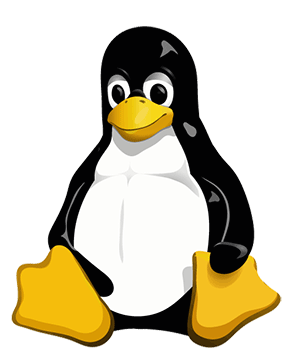

Linus Torvalds, né le 28 décembre 1969 à Helsinki en Finlande, c'est un informaticien américano-finlandais
(americain depuis septembre 2010), connu notamment pour avoir créé le noyau Linux en 1991 (à 21 ans).
Il continue d'en diriger le développement, étant considéré comme le « dictateur bienveillant à vie » de celui-ci.En 2012,
il a été honoré avec Shinya Yamanaka du prix Millennium Technology, décerné par la Technology Academy Finland
« en reconnaissance pour sa création d'un nouveau système d'exploitation open source pour les ordinateurs ayant conduit au noyau Linux, largement utilisé ».
Il est également lauréat en 2014 du Computer Pioneer Award, décerné par l'IEEE Computer Society.
Torvalds a étudié l’université d’Helsinki entre 1988 et 1996, où il obtient un diplôme de master en informatique, auprès du groupe de recherche NODES.
Sa carrière académique connaît une interruption lorsqu’il part effectuer son service militaire qui est obligatoire en Finlande.
En reprenant ses études en 1990, il est amené à travailler avec un ordinateur DEC MicroVax sous Ultrix, ce qui constitue ses premiers contacts avec Unix.
Inspiré par le système Minix développé par Andrew S. Il développe un noyau de système d'exploitation
pour tirer pleinement parti des fonctionnalités de son nouvel ordinateur personnel, un compatible PC doté d'un microprocesseur Intel 80386.
Ce noyau est celui du système d'exploitation GNU/Linux, sous licence GPL, et constitue sa thèse de master, intitulée Linux: A Portable Operating System.
Cependant, Linus Torvalds trouvait l'émulateur de terminal de Minix trop rudimentaire, comme d'autres choses dans ce système.
Il décida donc d'écrire un émulateur de terminal, notamment pour accéder aux machines de l'université.
Cependant, à la suite d'une erreur de manipulation, il détruisit la partition contenant Minix et prit la décision de tout continuer sur cet émulateur de terminal.
Au bout de quelques mois, ce logiciel devint un véritable noyau de système d'exploitation. Il décida de l'appeler Freax.
Il diffusa le code de son travail à quelques privilégiés au début, dont Ari Lemmke, qui lui ouvrit un compte FTP
sur le site de l'université pour diffuser quand il voudrait son travail. Cependant, ce dossier de stockage fut nommé « Linux » et ce nom a été conservé depuis.
Torvalds publia les premiers prototypes de Linux en 1991, et diffusa le 25 août 1991 un message sur Usenet,
désormais célèbre, annonçant la naissance d'un OS de sa part, et indiquant qu'il souhaitait à terme des contributions.
Linux :
Linux ou GNU/Linux est une famille de systèmes d'exploitation open source de type Unix fondé sur le noyau Linux, créé en 1991 par Linus Torvalds.
De nombreuses distributions Linux ont depuis vu le jour et constituent un important vecteur de popularisation du mouvement du logiciel libre.
Si à l'origine, Linux a été développé pour les ordinateurs compatibles PC, il n'a jamais équipé qu'une très faible part des ordinateurs personnels.
Mais le noyau Linux, accompagné ou non des logiciels GNU, est également utilisé par d'autres types de systèmes informatiques,
notamment les serveurs, téléphones portables, systèmes embarqués ou encore superordinateurs.
Le système d'exploitation pour téléphones portables Android qui utilise le noyau Linux mais pas GNU, équipe aujourd'hui 85 % des tablettes tactiles et smartphones.
Le système Unix a été créé par AT&T au début des années 1970 et s'est notamment répandu dans le monde universitaire.
Dès la fin de l'année 1977, des chercheurs de l'université de Californie apportèrent de nombreuses améliorations au système Unix
et le distribuèrent sous le nom de Berkeley Software Distribution (BSD). Finalement, les distributions BSD furent purgées du code AT&T,
et librement disponibles en 1991. La distribution de BSD a toutefois été l'objet d'une procédure judiciaire d'AT&T (en) au début des années 1990.
À l'origine, l'installation d'un système opérationnel GNU/Linux nécessitait des connaissances solides en informatique et
obligeait à trouver et installer les logiciels un à un.
Rapidement, des ensembles de logiciels formant un système complet prêt à l'usage ont été disponibles : ce sont les premières distributions Linux.
On peut citer par ordre chronologique:
C’est dans le monde des serveurs informatiques que GNU/Linux a eu le plus d’impact, notamment avec le très populaire LAMP.
Sur les serveurs, GNU/Linux a souvent été utilisé pour remplacer d’autres systèmes de type Unix ou éviter l'achat de licences Windows NT
et se retrouve être un des acteurs majeurs. Dès 2003, Microsoft semble faire appel lui-même en partie à GNU/Linux.
Le dessin du personnage a été choisi à l'issue d'un concours organisé en 1996 remporté par Larry Ewing.
Il utilisa GIMP, le logiciel de traitement d'image phare sur GNU/Linux.
Il s'agit d'un personnage fictif représentant très approximativement un manchot pygmée dont l'idée a été suggérée par Alan Cox1
puis affinée par Linus Torvalds2, le créateur du noyau Linux.
